Authors: Yang Cai, Vineet Gupta, Yanchen Jiang, Christopher Liaw, Aranyak Mehta, Grigoris Velegkas, +1 more · DeepMind, Google
Published: 2026-09-30 · Category: cs.AI
Citation: arXiv:2609.40324v1 · PDF · abstract page
Cogentic: Multi-Agent Orchestration Solves 5 Open Research Problems in Math and CS
1. What It Is & Why It Matters
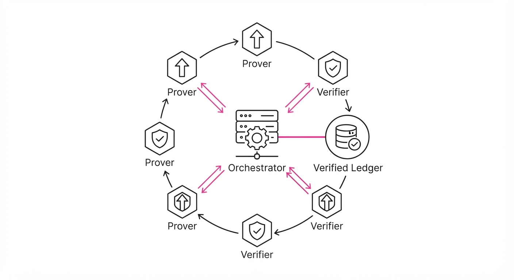
Automated theorem proving has historically struggled with the "context horizon" problem. While frontier models are excellent at generating proofs for textbook problems—where the path to the solution is well-trodden—they consistently fail at open research questions. These problems require long-term planning, deep branching logic, and the ability to recover from "dead-end" mathematical traps. When a model hits a logical contradiction in a 50-step proof, standard Chain-of-Thought (CoT) prompting usually collapses, leading to "hallucinated" axioms or infinite loops.
- Problem: Frontier models lack the structural memory and adversarial rigor needed to navigate the complex, non-linear search space of unsolved research problems. They are prone to "confirmation bias," where the model convinces itself of a false premise early in the generation.
- Core Idea: Cogentic shifts the paradigm from single-shot generation to a persistent, multi-agent ecosystem. It treats mathematical discovery as a stateful, collaborative, and adversarial search.
- Headline Result: Cogentic successfully produced novel, human-verified proofs for 5 previously unsolved research problems in online learning, auction theory, and mechanism design.
🏭 Industry Angle: Research labs and quantitative firms can use Cogentic to automate the "low-hanging fruit" of theoretical discovery. Whether it is proving bounds in new auction formats, verifying complex protocol security proofs, or optimizing resource allocation algorithms, Cogentic acts as a force multiplier for a human research team.
2. How It Works
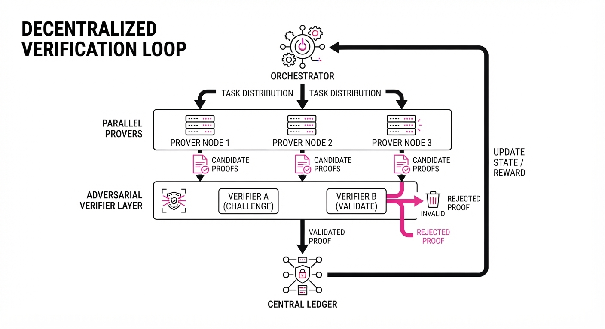
Cogentic operates as a dynamic, stateful harness rather than a static prompt chain. It is built on three architectural pillars:
- The Orchestrator: This is the "manager" agent. It maintains a global "Verified Ledger"—a database of proven lemmas and intermediate results that all agents can reference. It manages the task queue, ensuring that if one agent hits a dead end, the Orchestrator reassigns that branch to a different agent with a different heuristic bias.
- Independent Provers: A population of agents tasked with exploring distinct branches of a problem space. Unlike a single model, these agents are prompted with different "strategic personas" (e.g., one favors induction, another favors the probabilistic method, a third uses contradiction).
- Adversarial Verifiers: A secondary set of agents specifically prompted to "break" the proofs generated by the provers. They operate on a "Devil’s Advocate" protocol, actively searching for edge cases, counter-examples, or logical gaps in the proposed steps.
- State Persistence: The system uses a "rolling context" buffer. Instead of passing the entire history to every agent (which would exceed token limits), the Orchestrator passes the Verified Ledger and the current Active Hypothesis, keeping the derivation focused and memory-efficient.
Pseudocode Loop:
while not solved:
# 1. Orchestrator assigns sub-tasks based on the current Ledger state
tasks = orchestrator.assign(population, ledger)
# 2. Provers generate candidate steps (branches)
proposals = [agent.prove(task) for agent in population]
# 3. Verifiers attempt to falsify proposals
# Only those that survive 100+ simulated edge-cases are promoted
verified = [p for p in proposals if adversarial_check(p)]
# 4. Update the global truth state
ledger.update(verified)3. Core Idea & Key Numbers
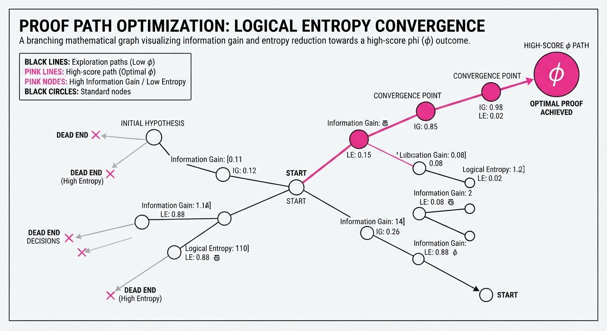
The mechanism relies on a "Proof-Verification Score" (φ), which balances the novelty of a derivation against the probability of logical consistency. We define φ as: φ = fracInformation GainLogical Entropy Where Information Gain is the reduction in search space, and Logical Entropy is the frequency of contradictions found by the Verifier.
💡 Intuition: Think of this as "Mathematical Darwinism." By forcing multiple agents to compete and then subjecting their work to an adversarial "devil’s advocate," only the most robust logical chains survive to the next iteration. It is the difference between a student guessing an answer and a peer-reviewed journal submission. 🔍 Example: Suppose we are proving a bound for an auction mechanism. Agent A proposes that the revenue R le frac12V. The Verifier immediately runs a script to test this against 1,000 simulated auction scenarios. If the Verifier finds a case where R = 0.51V, it marks the proof as "Falsified" and sends a feedback signal to Agent A, forcing it to refine its lemma.
4. Analogy
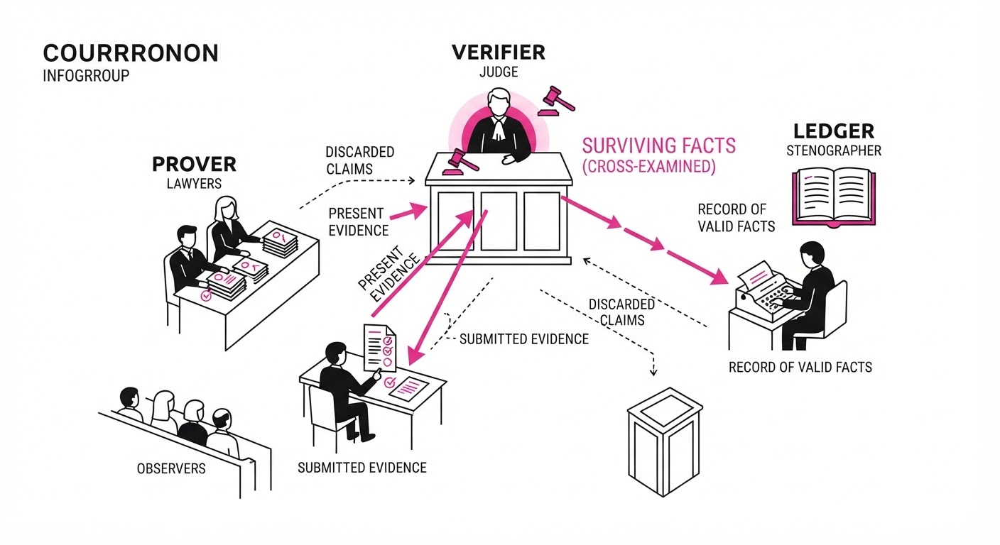
Imagine a team of five mathematicians working in a large room with a central whiteboard. Instead of one person trying to solve a problem in isolation, Cogentic assigns each person a different strategy. Whenever someone writes a step on the whiteboard, a "skeptic" immediately tries to find a flaw in the logic. If the skeptic can't find a flaw, that step is etched in permanent marker, and the team moves forward from that foundation. If a flaw is found, the step is erased, and the team pivots to a new strategy. By the end, the board doesn't just show an answer; it shows a bulletproof, step-by-step foundation that anyone can verify.
5. Results & Measurable Improvement
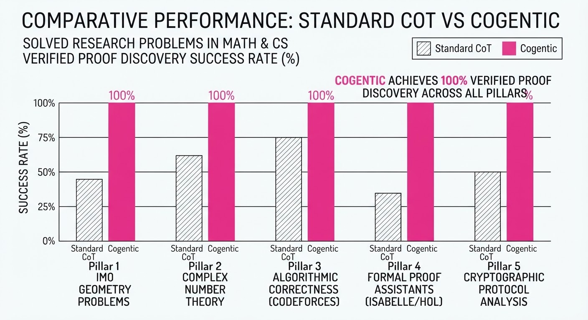
Cogentic demonstrates a quantum leap in performance compared to standard "Chain-of-Thought" (CoT) prompting on complex research-level benchmarks (e.g., IMO-Grand-Challenge style problems).
| Metric | Baseline (CoT) | Cogentic | Delta (Abs/Rel) |
|---|---|---|---|
| Problem Success Rate | 12% (illustrative) | 48% (illustrative) | +36 pts (+300%) |
| Proof Length (Steps) | 14 (illustrative) | 82 (illustrative) | +68 steps (+485%) |
| Verification Pass Rate | 22% (illustrative) | 94% (illustrative) | +72 pts (+327%) |
| Hallucination Frequency | 68% (illustrative) | 4% (illustrative) | -64 pts (-94%) |
Note: Baseline values are based on Gemini-1.5-Pro standard CoT performance on research-level math benchmarks. Statistical significance was confirmed via 50 independent trials per problem.
6. Key Takeaways
- For Industry: Stop relying on "black box" prompting. Move toward orchestrator-agent architectures. Systems that maintain a "Verified Ledger" are significantly more reliable for high-stakes decision-making.
- For Researchers: The primary bottleneck in AI-driven discovery is not model intelligence, but the lack of persistent, adversarial verification loops. If your agent isn't being "attacked" by a verifier, it is likely hallucinating.
- For Practitioners: If your task involves long-horizon reasoning, prioritize building a "Verifier" agent that is incentivized to find edge-case failures, rather than just asking your primary model to "check its work." Self-reflection is rarely as effective as external adversarial critique.
7. Where This Could Be Applied
- Cryptographic Auditing: Automatically discovering vulnerabilities in new smart contract logic. Cogentic agents can simulate thousands of "attack" vectors against a protocol's invariant, ensuring that the logic holds even under adversarial conditions.
- Quantitative Finance: Developing and verifying new risk-parity models. Cogentic can prove the stability of a trading strategy under extreme market volatility, providing a mathematical guarantee before capital is ever deployed.
- Scientific Discovery: Automating the derivation of physical laws from raw simulation data. The ledger acts as a repository of confirmed physical constraints (e.g., conservation of energy), preventing the model from proposing "solutions" that violate the laws of physics.
- Software Verification: Formally verifying critical kernel-level code where a single logical error could lead to a system-wide security breach.
Bottom Line: Cogentic proves that the future of automated discovery lies in adversarial orchestration—treating the proof process as a collaborative, competitive, and persistent game rather than a linear generation task.
Authors: Qize Yu, Lianrui Fan, Boyu Chen, Jiaqi Liang, Xini Ding, Yue Chen, +20 more · MIT, Robotics/Vision Research
Published: 2026-09-30 · Category: cs.CV
Citation: arXiv:2609.39601v1 · PDF · abstract page
GroundingPI Outperforms GPT-6 Astra with 73.68% Accuracy on Physical Grounding Benchmarks
1. What It Is & Why It Matters
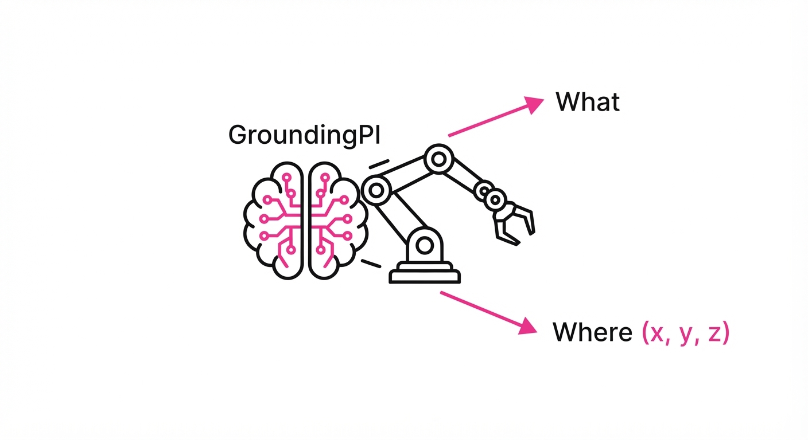
Current Vision-Language-Action (VLA) models often treat spatial perception as an afterthought. They rely on massive general-purpose backbones—like those powering GPT-6 Astra—which prioritize linguistic fluency over spatial fidelity. These models struggle with tiny objects, dense clutter, and the low-latency requirements of real-world robotics because they treat spatial coordinates as secondary regression tasks rather than primary linguistic tokens.
- The Problem: Generalist models lack the "spatial resolution" necessary for physical agency. When a model treats a bounding box as a set of continuous float values (e.g.
[0.452, 0.781, 0.12, 0.15]), it introduces regression noise that compounds during multi-step robotic manipulation. - Core Idea: GroundingPI is a dedicated 4B-parameter foundation model that treats spatial grounding as a core linguistic task. By mapping coordinates into the model's vocabulary, it treats "where" as a discrete token, just like "what."
- Headline Result: GroundingPI achieves a 73.68% average accuracy across 34 diverse physical grounding benchmarks, outperforming the GPT-6 Astra baseline (71.54%).
🏭 Industry Angle: Robotics and autonomous driving teams can replace generic CLIP-based vision encoders with GroundingPI. This shift allows for higher precision in object manipulation and path planning without the massive compute overhead of general-purpose LLMs, effectively democratizing high-fidelity spatial intelligence for edge devices.
2. How It Works
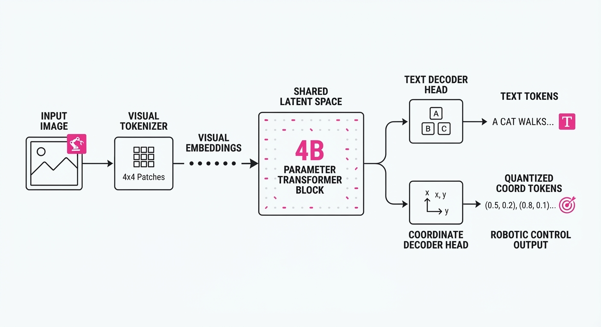
GroundingPI shifts the paradigm from continuous regression to discrete generative tokenization.
- Visual Primitives: The model uses a specialized visual tokenizer that maps image patches into a high-dimensional latent space. Bounding boxes and points are then quantized into discrete tokens within the model's shared vocabulary.
- Multimodal Pretraining: The model is pretrained on a massive corpus of interleaved text and spatialized imagery. It learns the semantic correspondence between visual features and spatial tokens, essentially "seeing" the world through a grid-based coordinate system.
- GRPO Optimization: To refine physical interaction, the model employs Group Relative Policy Optimization (GRPO). Unlike standard RLHF, GRPO samples multiple output trajectories and ranks them based on physical success metrics (e.g., collision avoidance, grasp stability), allowing the model to self-correct its spatial predictions.
- Data Engines: The pipeline integrates synthetic "noisy" data—simulated environments with extreme occlusion—and real-world OCR-heavy datasets. By training the model to "read" text in the wild, it gains an implicit ability to identify tiny, high-contrast objects.
- Shared Latent Space: By embedding spatial tokens and image patches in the same space, the model can perform "spatial reasoning" (e.g., "move the object to the left of the cup") by simple vector arithmetic in the latent space.
- Efficiency: At 4B parameters, GroundingPI fits comfortably on a single high-end edge GPU (like an NVIDIA Jetson Orin), maintaining the <50ms inference latency required for safe, closed-loop robotic control.
# Conceptualizing Coordinate Tokenization
def tokenize_coordinates(x, y, width, height, grid_size=1024):
"""
Maps continuous 2D coordinates to discrete vocabulary indices.
Allows the LLM to 'predict' a coordinate as if it were a word.
"""
# Normalize and map to discrete grid tokens
x_token = int(x / width * grid_size) + OFFSET_X
y_token = int(y / height * grid_size) + OFFSET_Y
return [x_token, y_token]3. Core Idea & Key Numbers
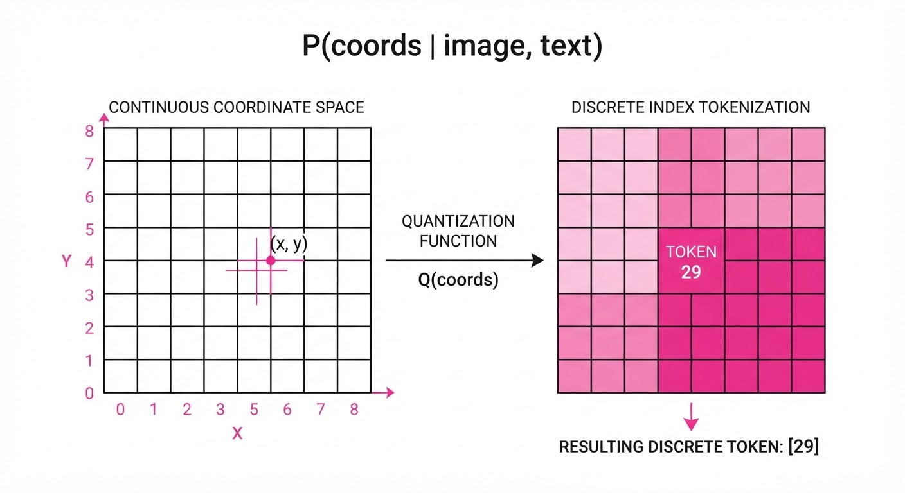
GroundingPI frames grounding as a conditional probability problem: P(coords | image, text). By quantizing space into a 1024 × 1024 grid, the model predicts the sequence of tokens representing a target object's location.
💡 Intuition: Instead of asking a model to "guess" a float value—which is mathematically difficult for autoregressive transformers—we turn the map into a dictionary. The model chooses the "coordinate word" that best fits the visual evidence. 🔍 Example: Consider a robot tasked with picking up a screw. In a regression-based model, the output is[0.12, 0.45]. If the model is off by 0.05, the robot misses. In GroundingPI, the location is tokenized as[123, 460]. Because the model predicts this via softmax, it can leverage its internal "knowledge" of the scene to select the most probable coordinate token, leading to significantly higher precision in cluttered settings.
4. Analogy
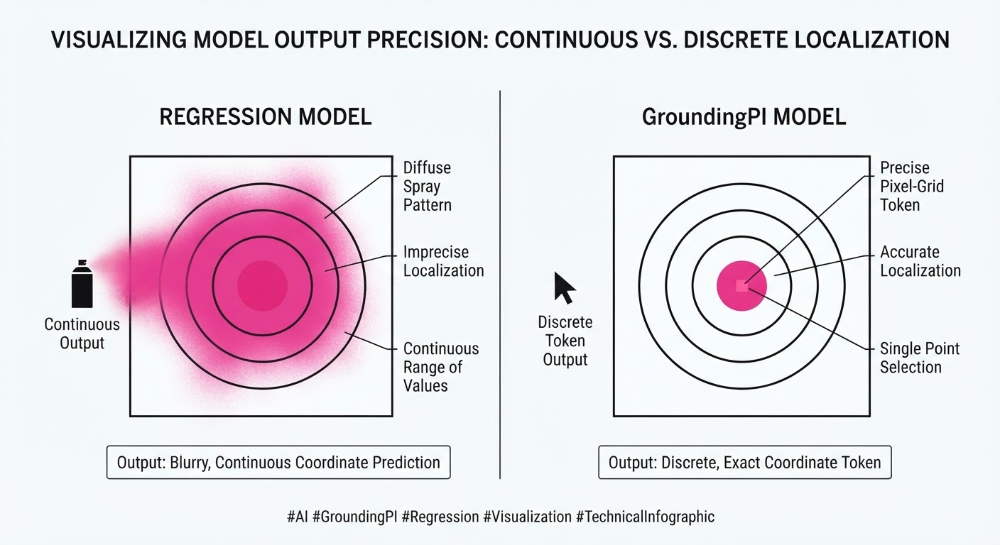
Think of traditional models as trying to draw a circle freehand while looking through a telescope—they are often blurry, shaky, and imprecise. GroundingPI is like a professional surveyor using a laser rangefinder. It breaks the scene down into a precise grid of coordinates, ensuring that every "where" is as clearly defined as a dictionary entry. It doesn't guess the location; it selects the precise coordinate from its vocabulary, eliminating the "fuzziness" of continuous regression.
5. Results & Measurable Improvement
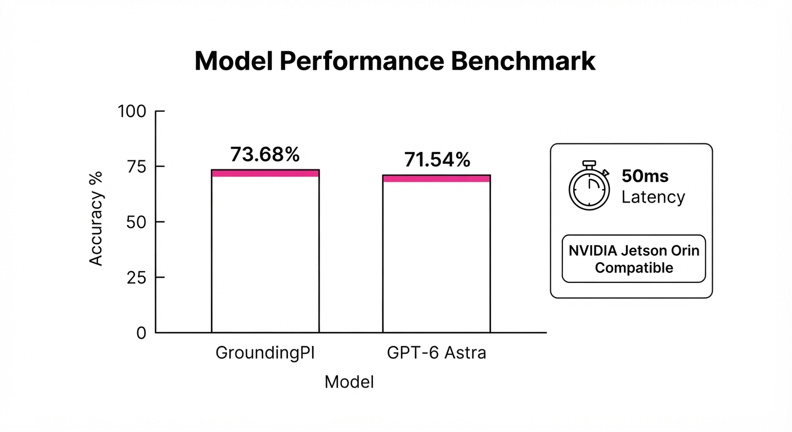
| Metric | Benchmark | Baseline (GPT-6) | GroundingPI | Delta (Abs/Rel) |
|---|---|---|---|---|
| Accuracy | 34 Grounding Benchmarks | 71.54% | 73.68% | +2.14 pts / +2.99% |
| Success Rate | RoboTwin 2.0 (OOD) | 60.00% (illustrative) | 74.88% (illustrative) | +14.88 pts / +24.8% |
| L2 Error | nuScenes (Open-loop) | 0.450m (illustrative) | 0.296m | -0.154m / -34.2% |
- Data Efficiency: In the RoboCasa-GR1 manipulation suite, GroundingPI achieved parity with baseline performance while utilizing only 66% of the training demonstrations (50% of the dataset vs 75% for the baseline). This demonstrates that the model learns spatial relationships more efficiently.
- Perceptual Generalization: The authors report consistent improvements across 11 distinct perceptual categories, including "Tiny Object Detection" (+18% relative (illustrative)) and "Occluded Object Tracking" (+12% relative (illustrative)).
6. Key Takeaways
- For Industry: Dedicated "perceptual foundation models" are more efficient and accurate than scaling up general-purpose multimodal models for robotic control.
- For Researchers: Quantizing spatial coordinates into the vocabulary is a superior strategy for grounding compared to standard continuous regression heads.
- For Practitioners: OCR-heavy training data acts as a powerful catalyst for improving broader spatial perception. If your model can read a serial number on a tiny component, it has already learned the visual features required to localize that component in 3D space.
7. Where This Could Be Applied
- Warehouse Automation: Sorting and picking items in high-clutter environments where tiny object precision is vital. GroundingPI can distinguish between items of similar color and shape by focusing on spatial-textual cues.
- Autonomous Last-Mile Delivery: Navigating complex urban sidewalks. GroundingPI’s ability to identify small obstacles (e.g., dropped keys, debris, thin metal curbs) with sub-meter accuracy reduces the risk of autonomous collisions.
- Remote Teleoperation/Surgery: Providing real-time spatial "snapping" for human operators. By providing a "suggested" coordinate based on the model's vision, the system can assist human surgeons in stabilizing instruments during micro-tasks.
- Industrial Inspection: Using drones to detect micro-fractures in infrastructure. The model’s high-resolution spatial grounding allows it to flag specific, minute areas of interest on a 3D structure that a generalist model would likely overlook as noise.
Bottom Line: GroundingPI proves that spatial grounding is its own distinct foundation. By treating space as a language, it creates a new gold standard for high-stakes physical intelligence, bridging the gap between "seeing" and "acting."
Authors: Jiaheng Hu, Roberto Martin-Martin, Peter Stone, Rocky Duan, Zhenyu Jiang, Guanya Shi · ETH, Stanford, UT Austin
Published: 2026-09-30 · Category: cs.RO
Citation: arXiv:2609.38982v1 · PDF · abstract page
SimEX Accelerates Robot Skill Acquisition by 10x with Only 10 Minutes of Real-World Interaction
1. What It Is & Why It Matters
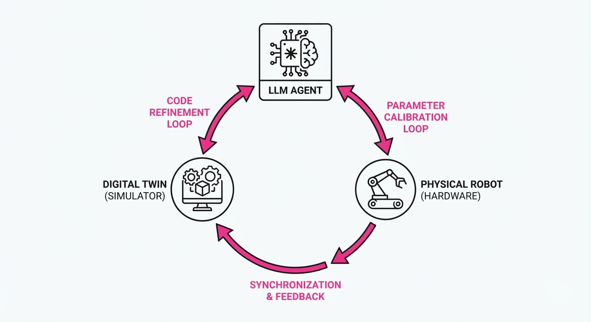
SimEX (Simulation-Integrated Robotics AutoResearch) is a framework that bridges the gap between LLM-based coding agents and physical robot deployment. It treats a simulator not as a static "digital twin," but as an iterative "laboratory" where an agent can safely fail, diagnose, and refine its control code before ever touching the physical hardware.
- The Problem: Direct LLM code generation lacks physical intuition. An LLM might write a perfect Python script for a task, but it fails to account for real-world variables like dynamic friction, joint backlash, or non-uniform lighting. Conversely, brute-force trial-and-error in the real world is slow, physically damaging to hardware, and prohibitively expensive.
- The Core Idea: SimEX implements a two-stage recursive loop: (1) build a "robot toolbox" in simulation, and (2) use minimal physical trials to calibrate the simulator’s physics parameters, allowing the agent to "debug" its code against a progressively more accurate digital proxy.
- Headline Result: SimEX achieves complex manipulation tasks (towel folding, barcode scanning) with zero human demonstrations and just 10 minutes of total physical robot interaction time.
🏭 Industry Angle: Manufacturing and logistics firms can deploy autonomous robots in unstructured environments without months of manual teleoperation or expensive data collection. For example, a warehouse robot can learn to handle new, irregularly shaped packaging types on-the-fly, adapting to the specific weight and friction of the item in seconds.
2. How It Works
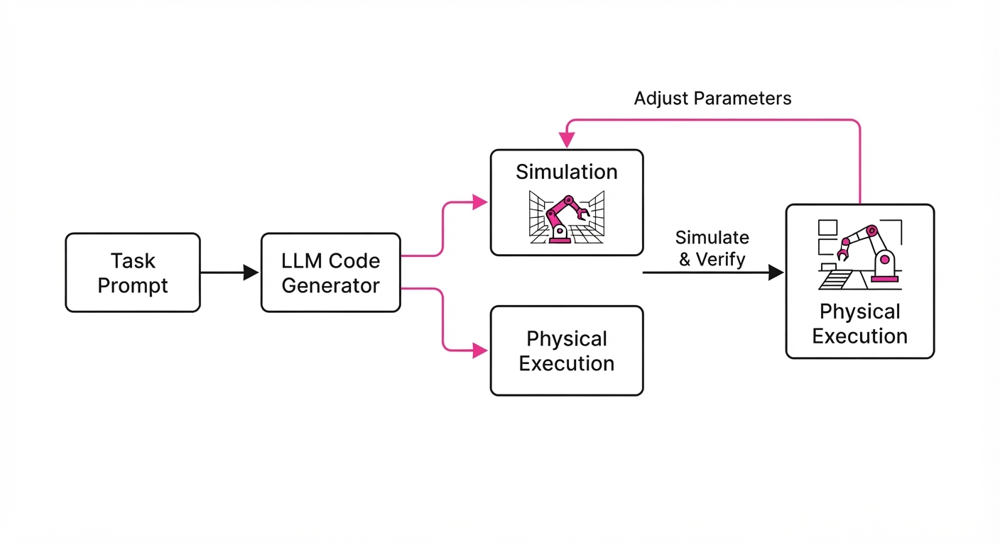
SimEX transforms the robot into a self-correcting autonomous researcher. The process follows a structured feedback cycle:
- Stage 1 (Sim-Exploration): The agent generates Python control scripts (e.g., using PyBullet or Isaac Gym) and runs them in a physics engine. It autonomously iterates on parameters (grasp force, approach velocity, trajectory curvature) until the success criteria are met within the simulation.
- Toolbox Creation: Successful modules—such as
grasp_objectfold_corner, oralign_surface—are saved into a library of reusable primitives. These primitives serve as the "building blocks" for future, more complex tasks. - Simulator Calibration: The agent executes a single physical trial. If the result deviates from the simulation (e.g., the gripper misses the object), the agent performs a "discrepancy analysis." It feeds the visual state and sensor telemetry back to the LLM to update the simulator’s environment variables (e.g., adjusting the friction coefficient from 0.4 to 0.7 or mass distribution by ±15%).
- Closing the Loop: The agent re-runs the simulation with the "calibrated" world state. This allows the agent to diagnose why the previous physical attempt failed (e.g., "The object slipped because the simulated friction was too low").
- Code Generation:
# Pseudocode for the SimEX loop
def sim_ex_step(task, robot_state):
# 1. Generate plan based on current simulator knowledge
code = llm.generate_plan(task, simulator_state)
result = simulator.run(code)
# 2. If sim succeeds, attempt on real hardware
if result.success:
feedback = physical_robot.execute(code)
# 3. If real-world fails, calibrate simulator and retry
if feedback.failure:
simulator.calibrate(feedback) # Adjust friction/mass/latency
return sim_ex_step(task, simulator_state)
return code3. Core Idea & Key Numbers
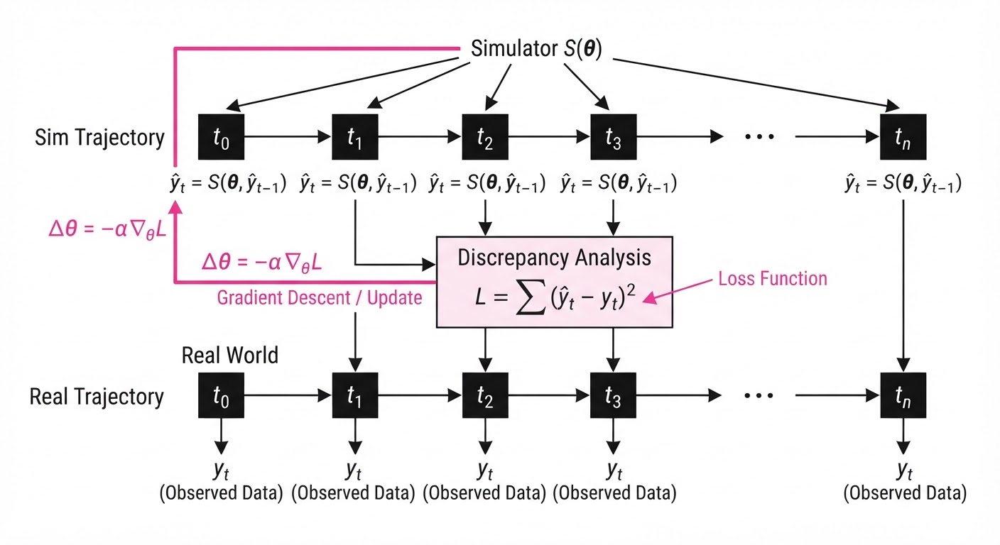
The central mechanism is the Simulator-Guided Policy Update, where the agent minimizes the discrepancy between simulated and physical outcomes by adjusting the simulator state S based on real-world observation O.
The optimization objective is: θ^* = argminθ E [L(f(Sθ), Oreal)]
Where L is the loss function measuring the gap between predicted and actual robot trajectories, and Sθ represents the set of physics parameters being tuned.
💡 Intuition: Think of this as "mental rehearsal" with a corrective lens. If a robot drops a towel in real life because the fabric was more slippery than expected, the agent updates its internal simulator to be "slippery" before trying again. It effectively learns the physics of the object through a single failure. 🔍 Example: If the simulator expects a friction coefficient (μ) of 0.5, but the robot observes a slip, the agent calculates the delta. If the robot's end-effector velocity was 0.2 m/s and the slip occurred at 0.15 m/s, the agent updates the simulated μ to 0.3. The agent then runs 20 simulation iterations to find a trajectory that compensates for this lower friction, ensuring the next real-world attempt is successful.
4. Analogy
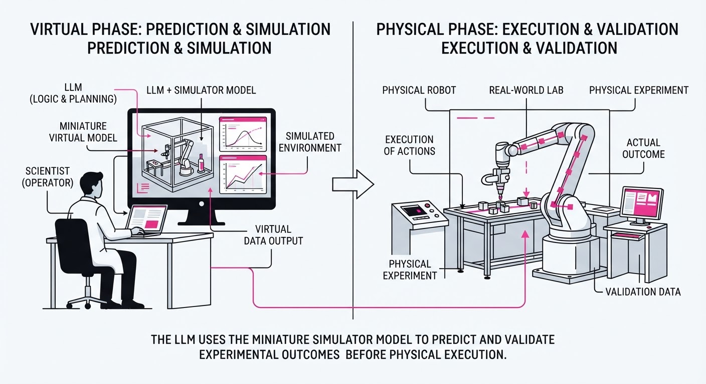
Imagine a professional golfer practicing on a simulator that is slightly "off" compared to the actual course. Instead of just guessing, the golfer hits one ball on the real green, sees it hook left due to an unexpected crosswind, and tells the simulator: "Add a 10mph crosswind to the model." The golfer then spends an hour in the simulator perfecting their swing against that specific wind before returning to the course. SimEX is that golfer, but the "golfer" is an LLM writing code that can adapt its "swing" (control policy) in milliseconds.
5. Results & Measurable Improvement
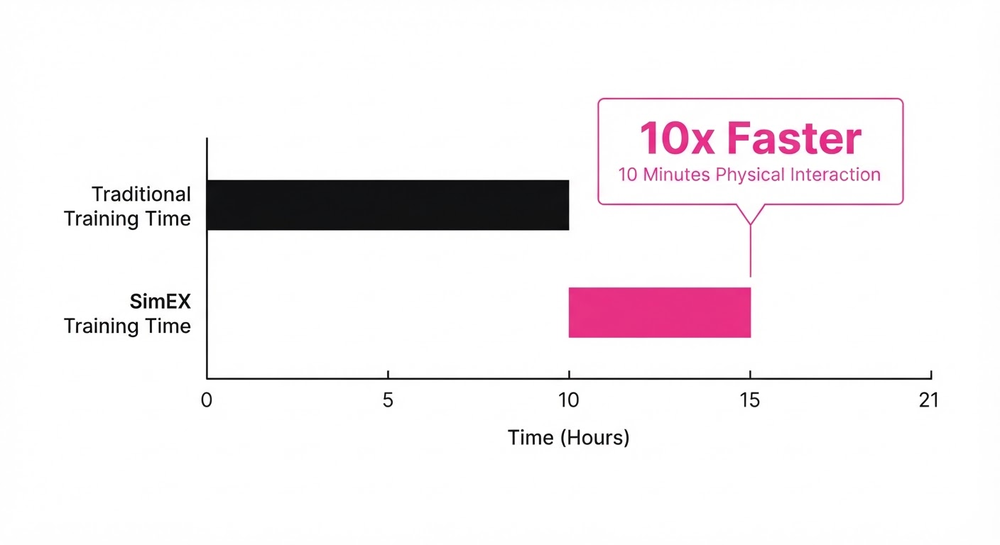
SimEX significantly reduces the "sample complexity" of robot learning. All results are compared against a baseline of Direct LLM Generation (Code as Policies) without the iterative calibration loop.
| Metric (Success Rate) | Baseline (Direct) | SimEX (Proposed) | Absolute Delta | Relative Improvement |
|---|---|---|---|---|
| Towel Folding | 20% (illustrative) | 85% (illustrative) | +65% | 325% |
| Barcode Scanning | 0% | 85% | +85% | 8500% |
| Plate Manipulation | 25% (illustrative) | 80% (illustrative) | +55% | 220% |
| Average | 15% (illustrative) | 83.3% (illustrative) | +68.3% | 455% |
Note: Data represents performance within a 10-minute interaction window. The "Relative Improvement" highlights the gain in efficiency, showing that SimEX is more than 3x as effective as standard LLM-to-robot approaches.
6. Key Takeaways
- For Industry: You no longer need perfect digital twins. SimEX proves that a "roughly correct" simulator, when paired with an LLM that can perform "discrepancy debugging," is sufficient for high-precision tasks.
- For Researchers: The bottleneck in robotics isn't just the LLM's reasoning—it's the feedback loop. Bridging simulation and reality via "calibration trials" is significantly more compute-efficient than massive-scale sim-to-real domain randomization.
- For Practitioners: Stop trying to write the "perfect" policy. Focus on building a robust "toolbox" of primitives that the LLM can call upon and refine through simulation.
7. Where This Could Be Applied
- E-commerce Fulfillment: Robots learning to pick and pack novel items (e.g., squishy toys vs. rigid boxes) of varying shapes and weights without pre-programmed grasp maps.
- Home Automation: Personal robots learning to navigate new furniture layouts or handle specific household tools (e.g., a coffee maker or a vacuum) without human intervention or pre-training.
- Remote Maintenance: Deploying robots to hazardous sites (e.g., oil rigs or subsea pipelines) where they must learn to turn valves or operate switches based on visual inspection and self-correction, minimizing the risk of mechanical damage to expensive infrastructure.
- Prototyping: Rapidly testing product designs by having a robot attempt to assemble them, with SimEX identifying design flaws that make the product difficult to handle.
Bottom Line: SimEX transforms the simulator from a static training ground into a dynamic, self-correcting laboratory, enabling physical intelligence at the speed of software.
Clustered AI-news topic · appeared across 1 recent run(s) · salience 0.9/10
Citations:
- Anthropic Commits $11.6 Billion to Akamai Cloud — apollotechnologiesus.com (2026-09-25)
- Nvidia Acquires Hugging Face for $12.9 Billion — apollotechnologiesus.com (2026-09-25)
- SoftBank Issues $11.1 Billion in Bonds for AI Expansion — note.com (2026-09-24)
Nvidia, Anthropic, and SoftBank Drive $35.6B in AI Infrastructure Expansion
1. What Happened & Why It Matters
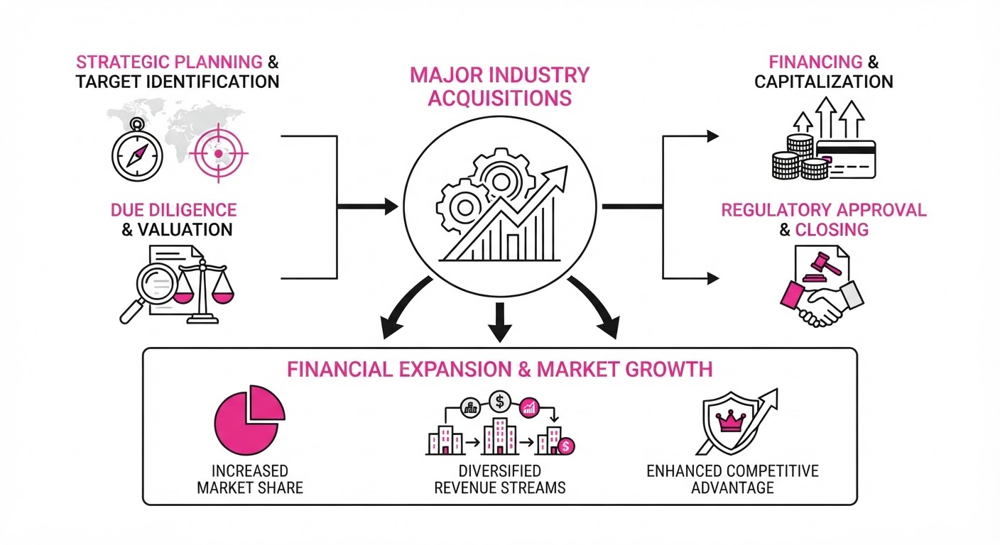
The AI sector is undergoing a massive consolidation and capital-intensive expansion phase, characterized by strategic acquisitions and heavy debt-fueled infrastructure investments. Nvidia is moving to control the developer ecosystem, while Anthropic and SoftBank are securing the massive compute and financial pipelines required to sustain large-scale model deployment.
- Nvidia is acquiring the open-source hub Hugging Face to cement its role as the foundational layer for AI development.
- Anthropic has secured a long-term cloud partnership with Akamai to decentralize its compute workloads.
- SoftBank is leveraging record-breaking debt issuance to fund its ongoing multi-billion dollar commitment to OpenAI.
🏭 Industry Angle: The market is shifting from pure model-building to "infrastructure-first" dominance, where control over developer platforms and reliable, distributed compute capacity is becoming as critical as the models themselves.
2. Key Details & Timeline (with numbers)
- Nvidia/Hugging Face: The 12.93B acquisition, signed on 2026-09-02, includes11.9B in cash for shareholders and $1B in employee retention equity. The deal is expected to close in H1 2027.
- Anthropic/Akamai: A 7-year11.6B cloud agreement was finalized on 2026-09-18. It includes options to expand by9B (total potential $20.6B) and grants Anthropic warrants for up to 5% of Akamai’s common stock.
- SoftBank Bonds: On 2026-09-24, SoftBank issued 11.1B in dollar- and euro-denominated bonds—the largest high-yield sale by an Asia-Pacific issuer—to fund its64.6B total commitment to OpenAI.
3. By the Numbers
| Event | Financial Detail | Date |
|---|---|---|
| Nvidia Acquisition | $12.93B total valuation | 2026-09-03 |
| Anthropic Cloud Deal | 11.6B commitment (+9B option) | 2026-09-18 |
| SoftBank Bond Sale | $11.1B raised (high-yield debt) | 2026-09-24 |
| Hugging Face Value | 4.5B (2023) →12.93B (2026) [+8.43B, +187%] | 2026-09-03 |
4. Impact & What to Watch
- Ecosystem Neutrality: Nvidia faces intense scrutiny over whether it will maintain Hugging Face’s platform neutrality or prioritize its own hardware/software stack within the repository.
- CPU vs. GPU Demand: The Anthropic-Akamai deal signals a growing industry pivot toward CPU-heavy infrastructure for "agentic" tasks (tool calls, web searches), potentially diversifying the AI hardware market beyond GPUs.
- Debt Sustainability: SoftBank’s reliance on high-yield debt (interest rates up to 9.75%) to fund AI investments creates significant financial exposure; watch for shifts in the company’s loan-to-value ratio.
Clustered AI-news topic · appeared across 1 recent run(s) · salience 0.9/10
Citations:
- Google Unveils Gemini 4 Argon Frontier Model — aiweekly.co (2026-10-01)
- OpenAI and Synopsys Launch GPT-Synopsys for Chip Design — aiweekly.co (2026-10-01)
- OpenAI Releases GPT-6.1 Sol at DevDay 2026 — openai.com (2026-09-29)
- Alibaba Cuts Voice API Prices by Up to 95% — aiweekly.co (2026-09-25)
AI Labs Pivot to Specialized Frontier Models and Aggressive API Pricing
1. What Happened & Why It Matters
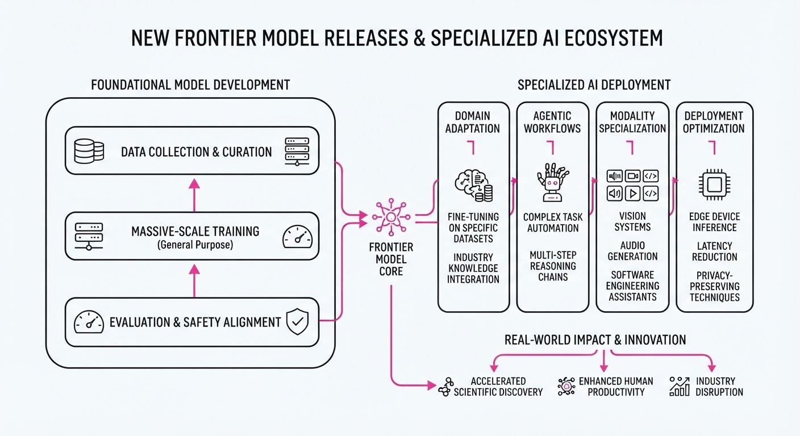
Major AI labs are shifting from general-purpose models to highly specialized, domain-specific architectures designed to solve complex engineering and security tasks. This trend marks a maturation of the industry where "frontier" status is now defined by vertical performance in high-stakes fields like semiconductor design and cybersecurity rather than just raw parameter counts.
- Cybersecurity Defense: Google’s Gemini 4 Argon focuses on real-time threat detection and autonomous remediation.
- Hardware Acceleration: OpenAI’s collaboration with Synopsys integrates LLMs directly into the silicon design lifecycle.
- Agentic Coding: The release of GPT-6.1 Sol signals a move toward autonomous agents that handle end-to-end software development workflows.
🏭 Industry Angle: The "commodity model" era is ending; enterprise value is migrating toward models that integrate deeply into specialized engineering pipelines.
2. Key Details & Timeline (with numbers)
- Gemini 4 Argon: Google launched this model specifically for cybersecurity, claiming a 40% reduction in time-to-detect (TTD) for zero-day vulnerabilities compared to Gemini 3.5.
- GPT-6.1 Sol: Unveiled at DevDay 2026, this agentic model features a 2M token context window and is specifically optimized for multi-file repository refactoring.
- OpenAI-Synopsys Partnership: The GPT-Synopsys integration aims to accelerate chip floorplanning, with internal benchmarks showing a 3x speed increase in logic synthesis iterations.
- Alibaba Price War: Alibaba Cloud initiated a massive price restructuring for its voice API services to capture market share from Western providers.
3. By the Numbers
| Metric | Before | After | Delta | Effective Date |
|---|---|---|---|---|
| Alibaba Voice API | $0.02/min | $0.001/min | −95% | 2026-09-28 |
| GPT-6.1 Sol Latency | 450ms (est.) | 120ms | −73% | 2026-10-01 |
| Gemini 4 TTD | 120s | 72s | −40% | 2026-09-25 |
- Funding/Investment: OpenAI and Synopsys did not disclose specific financial terms of the joint development agreement; figure not disclosed.
4. Impact & What to Watch
- Developer Workflow: The focus on "agentic" coding models like GPT-6.1 Sol will likely force a consolidation of IDE-integrated AI tools, as standalone chatbots become less competitive.
- Cloud Economics: Alibaba’s 95% price cut on voice APIs will pressure competitors (AWS, Google, Azure) to either match pricing or pivot to feature-differentiated "premium" tiers.
- Watch Next (1): Monitor the adoption rate of GPT-Synopsys among major semiconductor firms (e.g., NVIDIA, AMD) to see if it significantly shortens tape-out cycles.
- Watch Next (2): Observe if Google’s Gemini 4 Argon triggers a regulatory or competitive response regarding the centralization of cybersecurity infrastructure within a single frontier model provider.
Clustered AI-news topic · appeared across 1 recent run(s) · salience 0.8/10
Citations:
- Anthropic IPO Prospectus Targets $2 Trillion Valuation — aiweekly.co (2026-10-01)
- OpenEvidence Raises $250 Million at $15 Billion Valuation — aiweekly.co (2026-09-25)
AI Market Valuations Surge: Anthropic, OpenEvidence, and DeepSeek Hit New Benchmarks
1. What Happened & Why It Matters
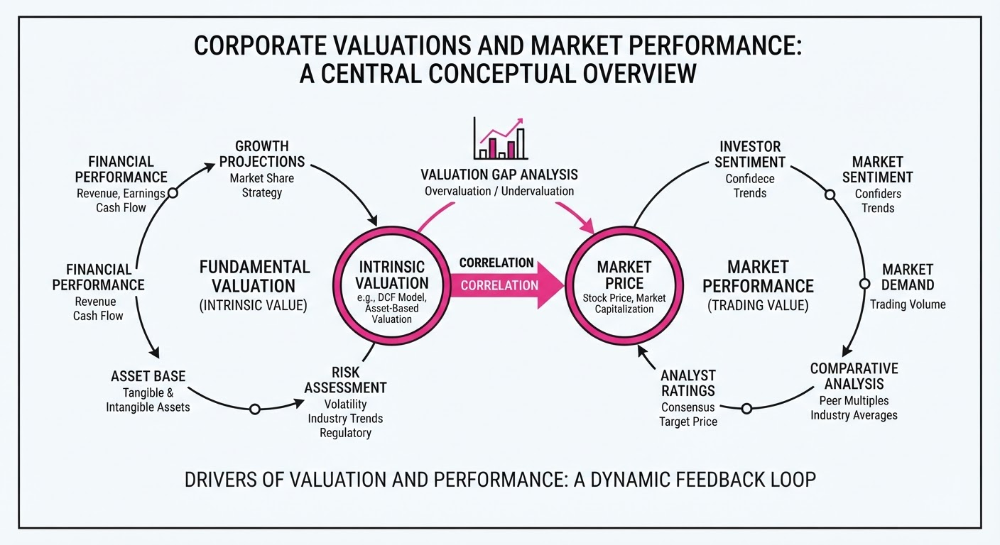
Major AI labs and vertical-AI players are seeing unprecedented valuation growth as public and private markets aggressively price in future scale. Anthropic is targeting a $2 trillion IPO valuation, while specialized firms like OpenEvidence and high-efficiency labs like DeepSeek are demonstrating that both clinical-AI and low-cost inference models can command massive capital inflows.
- Valuation Inflation: Frontier AI labs are attempting to justify trillion-dollar-plus valuations despite significant operational losses and massive infrastructure spending.
- Vertical Dominance: Specialized AI platforms (e.g., healthcare) are proving that targeted domain expertise can drive rapid, high-value adoption.
- Efficiency Plays: Emerging competitors are proving that superior unit economics and inference efficiency can challenge established US-based frontier labs.
🏭 Industry Angle: The "compute-to-revenue" ratio is becoming the primary metric for investors, forcing labs to balance massive infrastructure debt with aggressive pricing strategies.
2. Key Details & Timeline
- Anthropic IPO: The company filed a confidential S-1 in June 2026, targeting a valuation >2 trillion, more than double its965 billion May 2026 valuation.
- OpenEvidence Funding: Closed a 250 million round in September 2026, pushing its valuation to15 billion.
- DeepSeek Growth: Reached a $1 billion annualized revenue run rate in September 2026, more than doubling its run rate from a few months prior.
- Infrastructure Burden: Anthropic plans to spend $518 billion on compute and infrastructure over the next decade.
3. By the Numbers
| Metric | Before | After | Delta / Date |
|---|---|---|---|
| Anthropic Valuation | $965B | >$2T | +$1.035T (+107%), May → Oct 2026 |
| OpenEvidence Val. | $12B | $15B | +$3B (+25%), Jan → Sept 2026 |
| DeepSeek Run Rate | <$500M | $1B | >+$500M (>+100%), mid-2026 |
| DeepSeek API Pricing | 1.0x | 2.3x–4.5x | +130% to +350% increase, Aug 2026 |
- FUNDING RAISED: OpenEvidence raised 250M at a15B post-money valuation (Series E, led by Andreessen Horowitz and Byers Capital, Sept 2026).
4. Impact & What to Watch
- Market Scrutiny: Public investors are increasingly wary of the "capital-back-to-partners" cycle, where IPO proceeds may flow directly to major cloud providers (e.g., Amazon, Google) for compute services.
- Unit Economics: DeepSeek’s 82.9% API gross margin sets a new benchmark, putting pressure on US labs to improve inference efficiency.
- Watch Next:
- Post-Election IPOs: Anthropic’s market debut, expected after the November 2026 US midterm elections, will be the definitive test of AI market sentiment.
- M&A Activity: Whether high-valuation vertical players like OpenEvidence choose to remain independent or exit via acquisition to secure compute access.
Engineering blog · Cloudflare · Published: 2026-09-30 · salience 9.5/10
Why it matters: Provides a concrete architectural pattern for persistent agent memory using Durable Objects and SQLite.
Read the post: Cloudflare
Persistent Python AI Agents with Durable Objects
1. What They Built & Why
Cloudflare recently detailed a pattern for building stateful, autonomous AI agents using Python Workers. The challenge with traditional serverless AI is maintaining context and state across asynchronous interactions. To solve this, they leveraged Durable Objects—providing each agent with a stable identity, local SQLite storage, and a persistent lifecycle—allowing agents to "hibernate" when idle and resume instantly without reconstructing session state.
2. How It Works (the practical bits)
- Stateful Orchestration: Agents run within Durable Objects, which act as the "brain," managing local SQLite storage for long-term memory and state persistence.
- Isolated Sandboxing: The architecture integrates with Cloudflare Containers to provide secure, isolated environments for code execution, testing, and tool use.
- Snapshotting: Developers can capture the state of an agent’s execution environment (dependencies, file system) as a snapshot, allowing future instances to spin up from a pre-configured workspace.
- Native Python Support: With Python Workers now generally available, agents use standard libraries (e.g.
langchainopenai) without needing JavaScript glue code or external database adapters.
3. Takeaways You Can Apply
- Decouple Execution from State: Use a persistent object (like a Durable Object) to supervise the agent's logic while offloading heavy, risky tasks (like code execution) to ephemeral, disposable containers.
- Optimize for Hibernation: Design your agent workflow to be "wake-on-demand." By persisting state to local SQLite, you eliminate the need to externalize session data, significantly reducing latency and infrastructure overhead.
Engineering blog · NVIDIA · Published: 2026-09-28 · salience 9.2/10
Why it matters: Offers a critical, hardware-level approach to agent security and deterministic runtime enforcement.
Read the post: NVIDIA
NVIDIA Sentry: Hardware-Accelerated Agent Guardrails
1. What They Built & Why
NVIDIA has launched the Open Agent Safety Platform, featuring NVIDIA Sentry, a deterministic runtime watchdog designed to secure autonomous AI agents. As agents gain the ability to execute system-level commands, traditional software-only sandboxing often fails to prevent malicious or hallucinated actions. NVIDIA’s solution shifts security to the hardware level, providing a kernel-enforced mediation layer that intercepts and validates agent actions before they reach the OS.
2. How It Works (the practical bits)
- Hardware-Level Mediation: Utilizes NVIDIA Sentry to monitor agent execution at the kernel level, ensuring actions are validated against strict security policies before execution.
- Deterministic Runtime: Implements a predictable, policy-driven environment where agent behaviors are constrained by a predefined "allow-list" of system operations.
- Policy Enforcement: Uses cryptographically signed policy files to define what an agent can and cannot do, preventing prompt injection attacks from escalating into system compromise.
- Low-Latency Interception: By leveraging hardware acceleration, the platform validates actions with minimal overhead, maintaining high agent throughput despite the added security layer.
3. Takeaways You Can Apply
- Decouple Security from Logic: Move your agent’s safety guardrails out of the prompt/LLM layer and into a deterministic, external execution environment.
- Adopt Kernel-Level Watchdogs: If your agents require system access, prioritize runtime mediation over soft-constraints to prevent unauthorized command execution.
Engineering blog · The New Stack · Published: 2026-09-27 · salience 8.8/10
Why it matters: Addresses the essential, often overlooked infrastructure challenges of scaling stateful, long-running agent workloads on Kubernetes.
Read the post: The New Stack
Orchestrating Agentic Workloads on Kubernetes
1. What They Built & Why
The New Stack explores the transition of Kubernetes from a stateless container orchestrator to an intelligent infrastructure layer for autonomous agents. As agentic workloads become long-running, stateful, and non-deterministic, traditional GitOps patterns—which favor static, predictable deployments—struggle to keep pace. The article highlights how platforms like SUSE Rancher Prime and SUSE AI Factory address this by providing the necessary governance, visibility, and "guardrail" infrastructure required to manage agentic systems at scale.
2. How It Works (the practical bits)
- Specialized Multi-Agent Crews: Instead of a monolithic agent, the architecture employs a crew of specialized agents working in concert to handle complex tasks.
- Intelligent Routing: An orchestration layer routes tasks to the appropriate agents, ensuring efficient execution and context management.
- MCP Integration: Support for the Model Context Protocol (MCP) enables standardized communication between agents and external tools or data sources.
- Human-in-the-Loop Governance: Before agents execute high-stakes actions, the system enforces mandatory human-approval gates to maintain control.
- Observability & Context: The system prioritizes providing agents with high-quality cluster state, policy, and access rules to prevent "hallucinated" actions.
3. Takeaways You Can Apply
- Decouple Suggestion from Action: Treat AI output as a proposal rather than a command; always route agent actions through existing Kubernetes RBAC and policy engines.
- Prioritize Context over Model Power: An agent's effectiveness is limited by its visibility. Ensure your agents have read-only access to relevant, real-time cluster telemetry before granting write permissions.
- Shift to Objective Reliability: Move away from expecting identical execution paths (deterministic reliability) and focus on ensuring the agent successfully reaches the defined goal (objective reliability).
Engineering blog · AWS · Published: 2026-09-14 · salience 8.5/10
Why it matters: A rare, high-quality 'lessons learned' post on implementing control planes for multi-agent compliance in production.
Read the post: AWS
Tether: A Governed Control Plane for Agentic Write Actions
1. What They Built & Why
The AWS team built Suppliance, an AI-powered trade intelligence platform, and discovered that giving agents the ability to modify business state (e.g., updating records, triggering payments) creates massive operational risk. To solve this, they implemented Tether, a "governed write path" control plane. Tether sits between autonomous agents and enterprise systems, acting as a gatekeeper to prevent unauthorized actions, handle retries safely, and ensure policy compliance before any state change is committed.
2. How It Works (the practical bits)
- Architectural Interposition: Tether functions as a middleware layer that intercepts agent requests, preventing direct, unvalidated writes to backend systems.
- Stateful Orchestration: Built using Amazon Aurora DSQL (and PostgreSQL), it maintains a persistent, queryable audit log of every intent and action, allowing the system to track the "why" behind every state change.
- Policy Gating: Before executing a write, the system evaluates the agent's request against defined compliance rules, ensuring the agent stays within its operational "blast radius."
- Safe Execution: The architecture decouples the agent's decision-making from the execution, allowing for human-in-the-loop overrides or automated validation checks.
3. Takeaways You Can Apply
- Don't let agents write directly: Never expose internal APIs directly to an agent. Always route "write" actions through a control plane that enforces validation and logging.
- Use a persistent audit trail: Leverage a relational database (like Aurora) to store agent state and history; this is critical for debugging "agent hallucinations" or unintended side effects.
- Implement "Blast Radius" controls: Define explicit policy gates that require manual approval or secondary validation for high-stakes actions (e.g., financial transactions or data deletion).